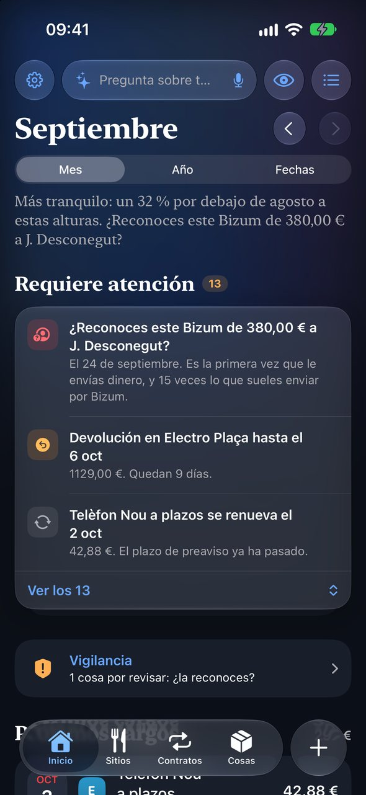
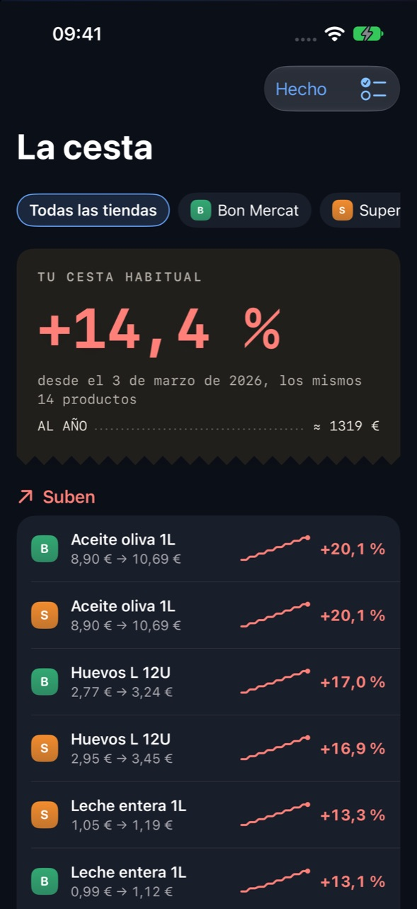
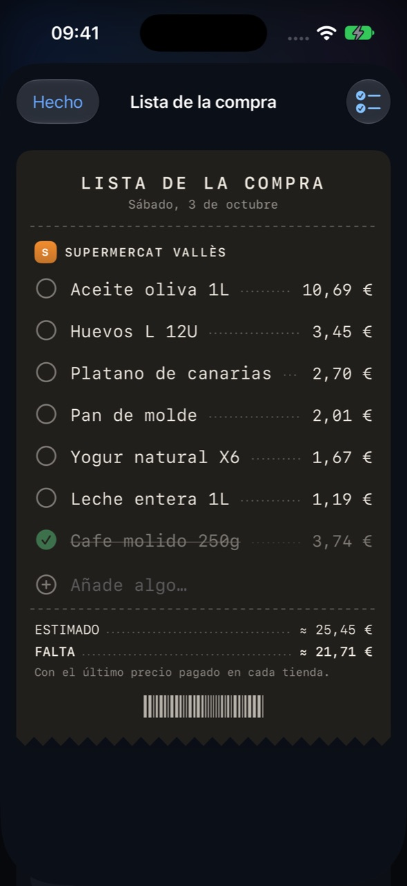
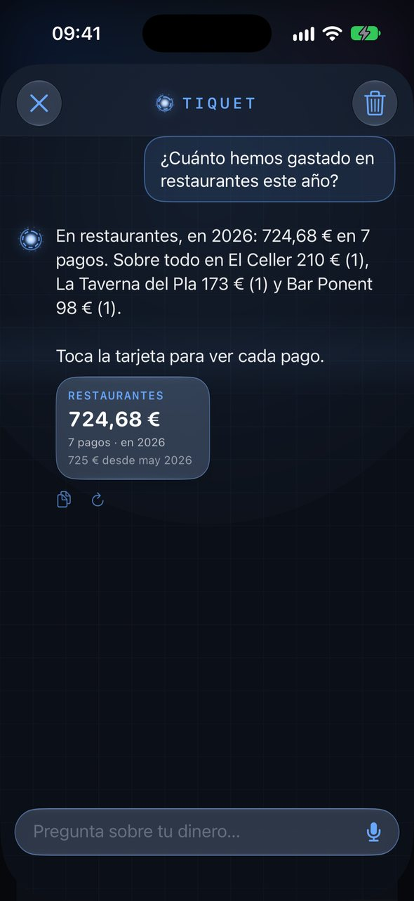
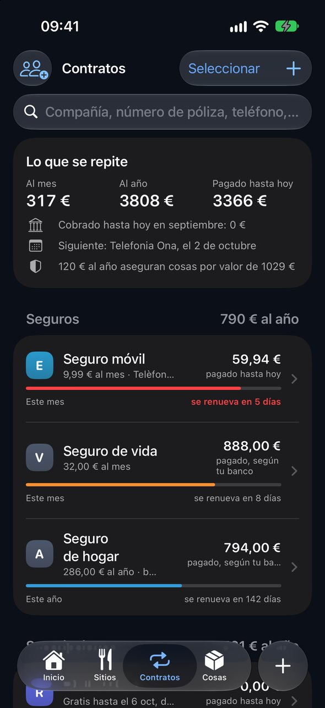
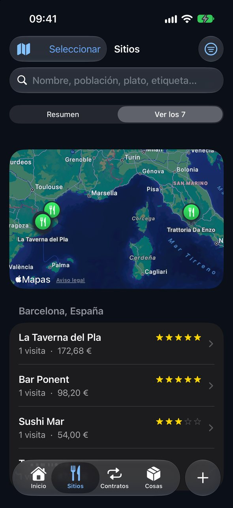
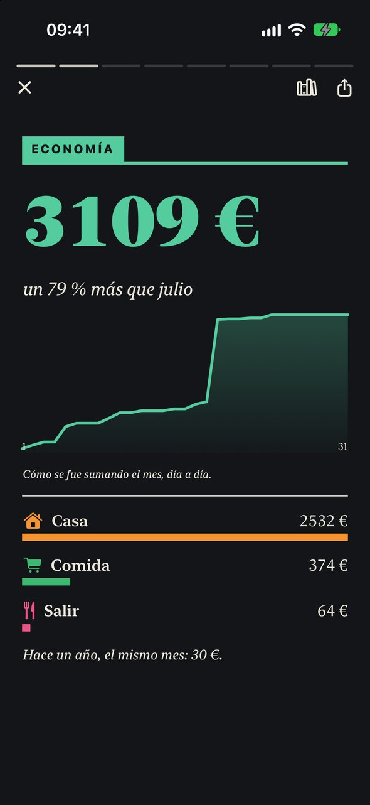

Beta privada · TestFlight
Prueba Tiquet
Fotografía tiques, guarda contratos y envía los extractos de tu banco. Tiquet lo lee todo en tu iPhone y te dice qué pagas, qué se renueva, qué sube de precio en tu súper y qué te toca comprar.
Tiquet ya está en el App Store. La beta de TestFlight trae antes las novedades que aún están en revisión.
Para empezar
Cuatro pasos, cinco minutos
- 1
Instala TestFlight
Es la app gratuita de Apple para probar apps antes de que salgan. En el App Store busca «TestFlight» y fíjate en que la publica Apple.
Abrir TestFlight en el App StoreDe Apple · su icono es azul con una hélice blanca - 2
Abre el enlace de invitación en el iPhone
Toca el enlace desde el iPhone (no desde el ordenador). Se abre TestFlight: pulsa Aceptar y luego Instalar. Tiquet aparece en tu pantalla de inicio como cualquier app.
Ábrelo con Safari y con TestFlight ya instalado. Si ves «No se ha podido abrir la aplicación», falta TestFlight o el navegador no sabe abrirla: instala TestFlight, copia el enlace y pégalo en Safari.
- 3
Ábrela y mírala con datos de ejemplo
En la primera pantalla, Probar con datos de ejemplo te enseña una casa inventada con todo funcionando. Cuando quieras, sal del modo ejemplo y empieza con lo tuyo: nada de lo inventado se mezcla con tus datos.
- 4
Cuéntanos qué ves
Haz una captura de pantalla dentro de Tiquet y TestFlight te ofrece enviarla como comentario. Lo que falla, lo que no entiendes y lo que echas en falta: todo ayuda.
Qué le puedes dar
Todo lo que tenga un importe
Con el botón + haces una foto o eliges de Fotos. Desde el correo o Archivos, mantén pulsado el adjunto y elige Compartir › Tiquet.
Cada artículo, con su precio
→ La cesta y la lista de la compraMercadona, Lidl, Bon Preu… Si el rollo es largo, mejor con buena luz y el papel plano.
El sitio, en el mapa
→ SitiosPuntúa los platos con estrellas y pregúntale después dónde te gustó algo.
Lo que pagas cada mes
→ ContratosFoto o PDF de la póliza o del contrato del móvil. Te avisa antes de que se renueve.
Directa desde el correo
→ Compartir › TiquetLuz, teléfono, compras online. Lee el PDF tal cual, sin fotos.
Tus movimientos, de golpe
→ Movimientos y VigilanciaEn CSV o Excel. Detecta suscripciones, cargos raros y lo que se repite.
Extractos del banco
Tres años de movimientos en un minuto
En la web o la app de tu banco, busca Exportar movimientos y elige CSV o Excel. Si solo te deja un año cada vez, descarga un archivo por año.
Envíatelos por correo o guárdalos en Archivos.
Selecciónalos (hasta 20 de una vez), toca Compartir y elige Tiquet. Si no aparece, desliza hasta Más y actívalo.
Abre Tiquet: los lee uno detrás de otro, en el orden en que los enviaste. Puedes repetir un archivo sin miedo: lo que ya estaba no se duplica.
Reconoce las exportaciones de BBVA, Banc Sabadell y Revolut, y cualquier CSV o Excel con fecha, concepto e importe. Tiquet nunca entra en tu banco ni te pide claves.
Sácale partido
Lo que te enseña

Inicio
Lo que requiere atención, lo que se cobra pronto y cómo va el mes.

La cesta
Cuánto ha subido tu cesta en cada súper, qué producto sube y dónde es más barato.

Lista de la compra
Se llena con lo que sueles comprar. En el súper vas tachando y te dice cuánto falta.

Pregunta
Pregúntale con tus palabras, también por voz.

Contratos
Seguros, móvil, luz, suscripciones: cuánto cuestan y cuándo se renuevan.

Sitios
Bares y restaurantes en el mapa, con lo que pediste y si te gustó.

El Mes
Cada mes, un periódico con lo que ha pasado en tu casa.
Desliza para ver más →
Prueba a preguntarle
En el súper
Dile a Siri «Lista de la compra en Tiquet» y se abre lista para tachar. Al escribir un producto, a partir de tres letras te sugiere los que ya compraste, con su precio.
Privacidad
Tus datos no salen de tu iPhone
La lectura la hace Apple Intelligence en el propio iPhone. Sin ella, Tiquet también lee con sus propias reglas. La copia en iCloud es opcional y va a tu iCloud privado. Las compras dentro de la beta (la prueba de 14 días y Tiquet Plus) son de prueba: no se cobra nada.
¿Dudas o ideas?
Desde TestFlight, o escribe a:
a.estevez@gmail.comMás en tiquet.securlabs.net